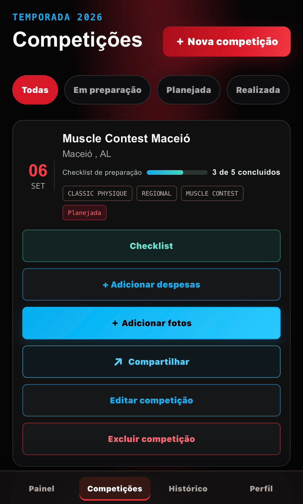
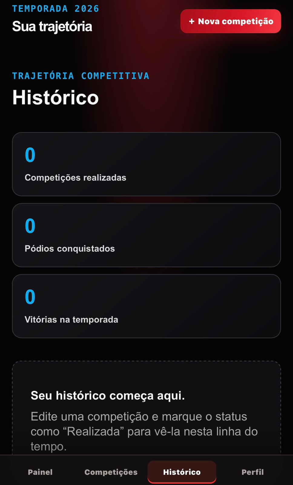
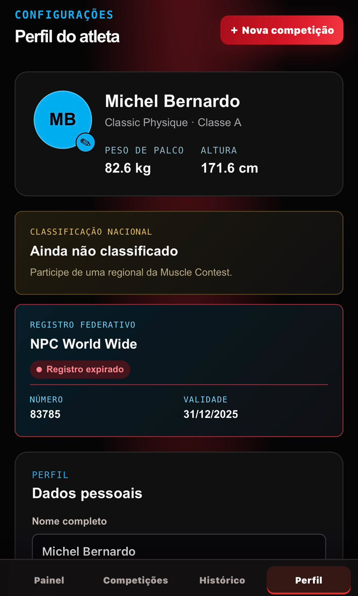

Organize a temporada
Crie temporadas, cadastre competições e mantenha o foco no próximo objetivo.
BETA PRIVADO · PARA ATLETAS
Planeje o próximo palco, registre resultados e acompanhe cada etapa da sua temporada no MuscleLog.
Você será direcionado para o ambiente de testes.
FEITO PARA QUEM VIVE O PALCO
Centralize as informações que normalmente ficam espalhadas entre anotações, conversas e planilhas.
Crie temporadas, cadastre competições e mantenha o foco no próximo objetivo.
Use o checklist de cada campeonato para não esquecer os detalhes que antecedem o palco.
Visualize despesas por competição e acompanhe o total investido na temporada.
Guarde colocações, pódios, vitórias e conquistas Overall em uma trajetória organizada.
Anexe até cinco fotos por competição para registrar cada etapa da jornada.
Gere cards verticais de preparação e resultados prontos para publicar nos Stories.
VISUALIZE SUA TEMPORADA



FAÇA PARTE DO QA
Esta é uma versão em teste. Explore o app no celular, registre sua temporada e nos conte o que funcionou — ou o que precisa melhorar.